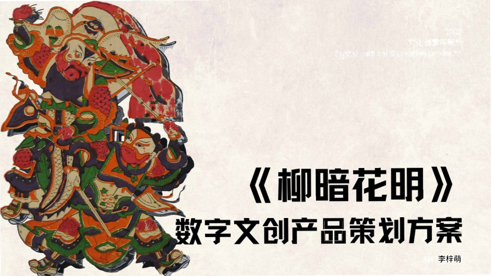
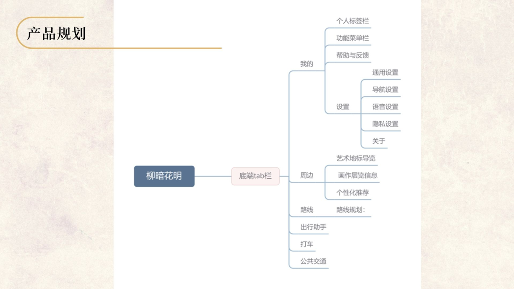
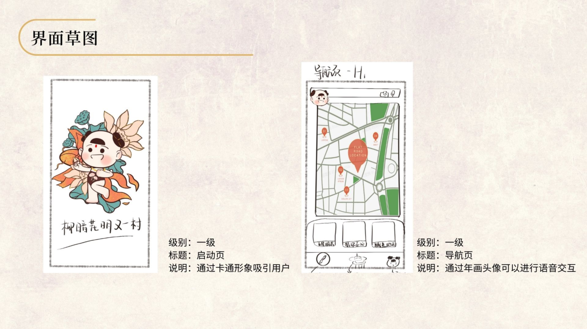
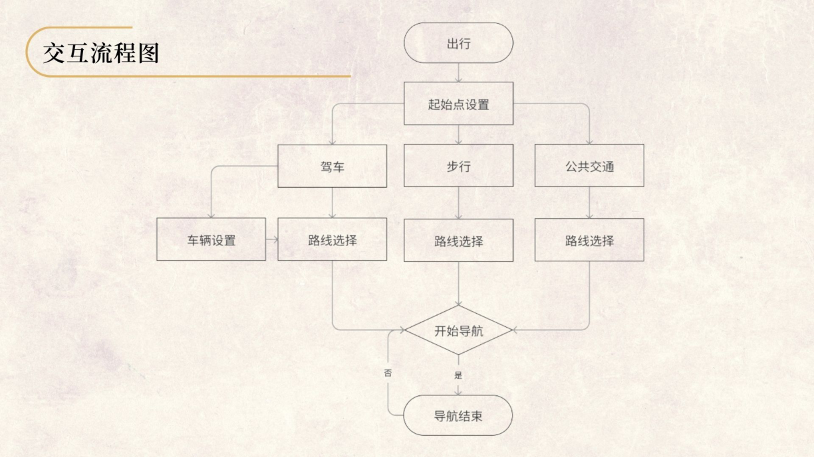
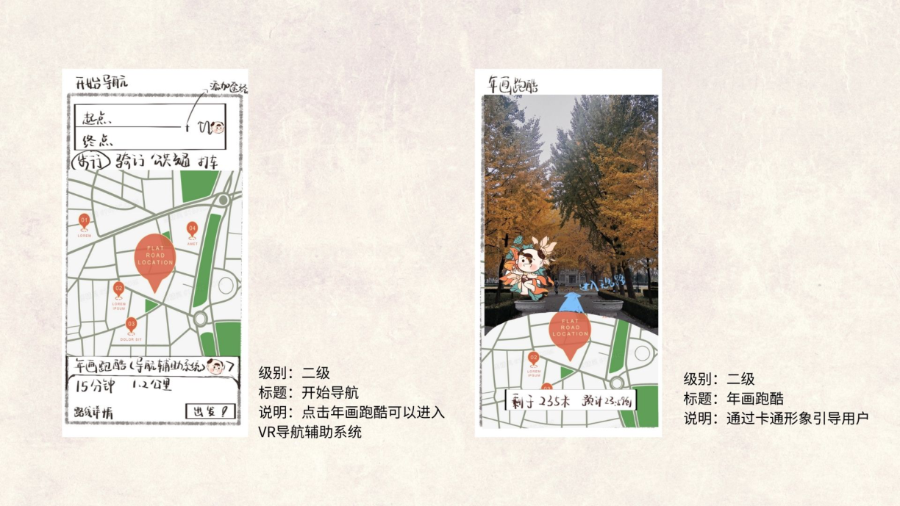

柳暗花明
年画文化主题导航 APP
以天津杨柳青年画为文化线索，连接地点发现、文化内容与路线规划，让用户能从“感兴趣”继续走到“如何到达”。

项目阶段：产品策划与原型设计。依据 41 页原始方案整理；本次补充 MVP 范围及验证计划。
产品定位与核心问题
产品面向到访天津、对传统文化感兴趣的游客。原方案希望用杨柳青年画视觉与角色形象改造导航体验。本次整理进一步明确核心任务：用户发现感兴趣的文化地点后，能够了解信息、选择路线并开始到访。是否确实减少了工具切换与决策成本，仍需通过用户测试验证。
目标用户与使用场景
原方案将 20—40 岁文化兴趣人群作为目标用户。优先场景是游客在陌生地点准备前往文化点位，需要同时了解目的地内容和到达方式。本次建议先聚焦步行到访，验证较完整的任务流程，再扩展出行模式。项目时间、个人分工与团队规模待补充。
原方案中的设计产出
| 产出 | 原材料位置 | 体现的产品工作 |
|---|---|---|
| 定位与用户分析 | 第 4、14—17 页 | 明确文化主题、用户对象与出行场景 |
| 竞品与价值分析 | 第 19—24 页 | 对照文化内容与地图工具的表达方式 |
| 创意矩阵与功能规划 | 第 26—29 页 | 将年画元素转化为产品功能设想 |
| 信息架构与流程 | 第 32—36 页 | 组织周边、路线与个人设置等模块 |
| 界面草图 | 第 37—40 页 | 呈现启动、地图、设置及实景表达 |
从文化创意到产品任务
| 设计问题 | 方案判断 | 需要验证的结果 |
|---|---|---|
| 文化信息与出行路径分散 | 将地点详情与路线入口放在同一任务链条 | 用户能否找到地点并进入路线预览 |
| 陌生地点难以判断方向 | 优先确保二维路径、当前位置与下一步指引清楚 | 用户能否理解导航状态并完成关键操作 |
| 年画元素如何融入 | 用角色与地点内容表达文化主题，保持道路指引可读 | 文化视觉是否帮助理解或造成干扰 |
| AR 是否值得首版投入 | 先验证二维核心流程，AR 单独验证 | AR 是否解决二维体验中真实存在的问题 |
功能取舍与版本规划
原方案覆盖 AR、驾车、公共交通、打车、周边推荐和个人设置。本次建议将首版收敛为文化地点发现、地点详情、步行路线规划和二维导航。收藏与主题内容优化放在下一阶段，AR 与其他出行模式分别评估，避免同时承担地图能力、文化内容和多种交互的验证成本。
核心用户流程
浏览或检索文化地点，查看地址及文化介绍，设置起点与终点，比较可用步行路线，再进入导航。用户拒绝定位时可手动设起点；路线获取失败时保留输入并允许重试；导航中需要清楚区分正常引导、定位不可靠、偏航重算与主动退出。
原型与信息架构




如何验证这套方案
先测试“找到指定文化地点并进入路线预览”的任务，观察入口理解、任务完成和失败原因；再在受控场景验证导航状态与退出操作。记录路线规划成功率、地点到路线转化率和关键操作错误。当前为验证计划，未将概念稿视为已上线产品或精度提升证据。
项目复盘
文化主题为产品提供了识别度，核心价值仍要通过任务体验证明。下一轮需要核实点位与文化内容来源、补齐各类异常状态原型，并确认地图服务能力。只有基础路线流程可靠，进一步的文化交互和 AR 才有清楚的验证起点。